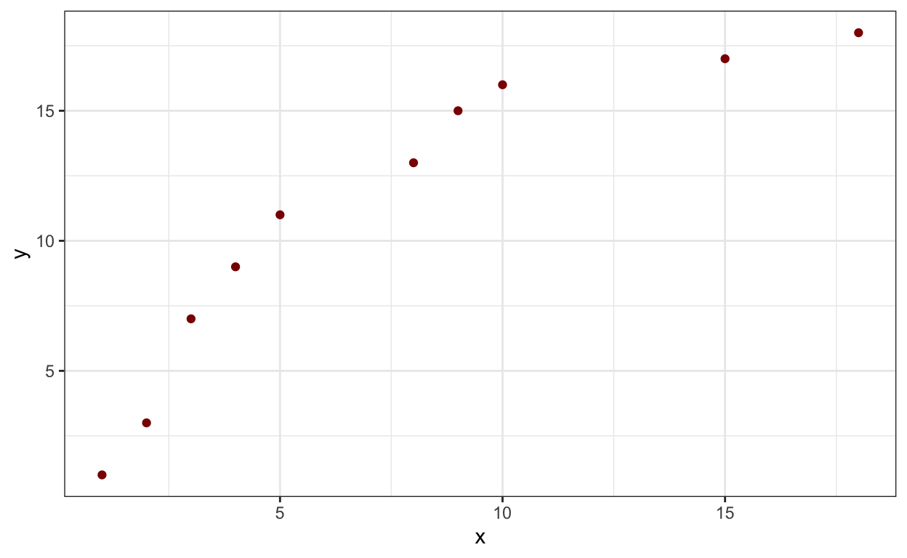
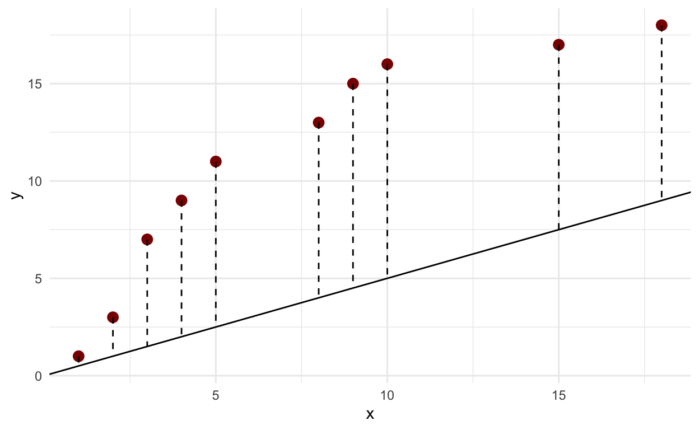
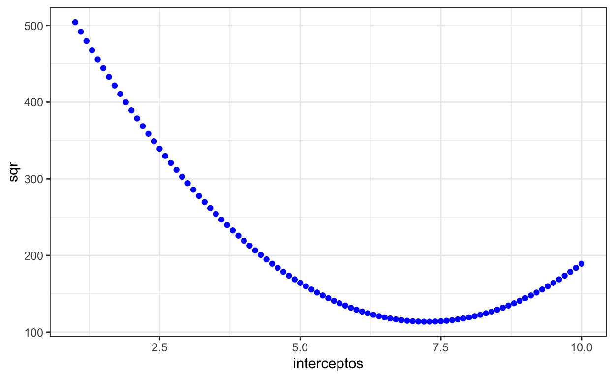
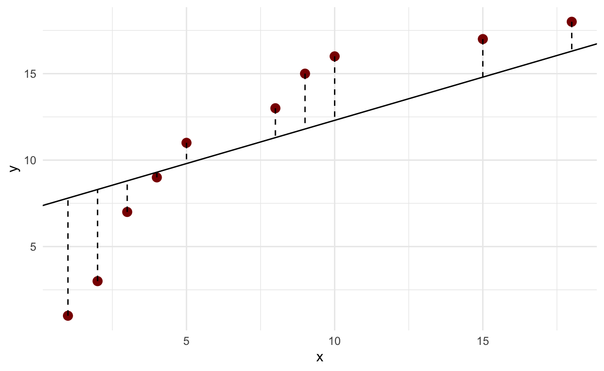
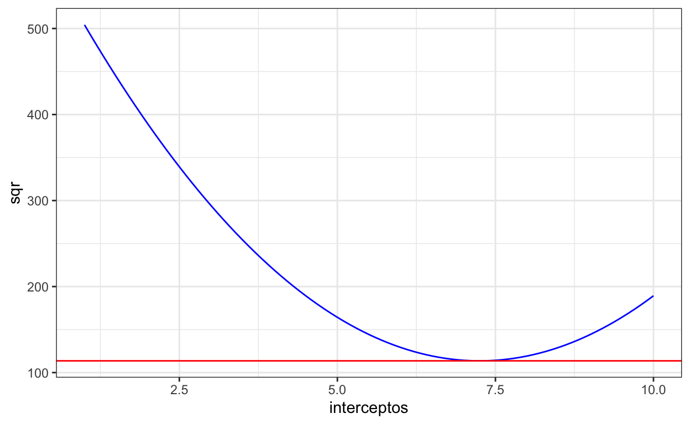

Para quem quer apronfundar nos fundamentos da jurimetria, gradiente descendente figura como peça chave tanto para estimar coeficientes de modelos jurimétricos, como também para estimar os pesos de redes neurais profundas. Este tutorial mostra como estimar os coeficientes de uma regressão linear usando gradiente descendente.
Neste tutorial iremos mostrar como usar gradiente descendente para estimar os coeficientes de uma regressão linear. Uma vez compreendido, gradiente descendente pode ser usado para estimar outros modelos e, se você se aventurar por deep learning, verá que gradiente descendente é peça chave no processo de estimar pesos em redes neurais. O domínio de gradiente descendente é fundamental para quem quer trabalhar com inteligência artificial aplicada ao direito.
Para demonstrar como gradiente descendente funciona, faremos um primeiro exercício para encontrar o intercepto de uma regressão linear usando uma sequência de valores possíveis e verificar qual deles retorna a menor soma dos quadrados dos resíduos (SQR).
Após aprender como estimar o intercepto a partir de uma sequência de possíveis valores, mostraremos como fazer o mesmo com derivada e, por fim, usaremos gradiente descendente para estimar tanto o intercepto quanto o coeficiente angular do modelo.
Neste tutorial, assumimos que você já conhece algo de regressão linear e do processo de estimação de parâmetros via mínimos quadrados.
Abaixo criamos alguns valores fictícios para x e y numa tibble. Fique livre para gerar os seus próprios ou usar uma base real.
# A tibble: 10 × 2
x y
<dbl> <dbl>
1 1 1
2 2 3
3 3 7
4 4 9
5 5 11
6 8 13
7 9 15
8 10 16
9 15 17
10 18 18Plotando os esses pontos:
df |>
ggplot(aes(x = x, y= y))+
geom_point(color = "darkred")+
theme_bw()
Para este cálculo, vamos fixar a inclinação (\(\beta_1\)) em 0.5. Uma forma de encontrar o intercepto é chutarmos um valor inicial. Iniciamos com 0. O dataframe com os valores preditos ficaria assim:
df <- df |>
mutate(preditos = x*.5+0)## Adicionar zero é desnecessário, mas para fins didáticos funciona bem.
df# A tibble: 10 × 3
x y preditos
<dbl> <dbl> <dbl>
1 1 1 0.5
2 2 3 1
3 3 7 1.5
4 4 9 2
5 5 11 2.5
6 8 13 4
7 9 15 4.5
8 10 16 5
9 15 17 7.5
10 18 18 9 O gráfico abaixo mostra os valores preditos (linha) em relação aos valores reais(pontos):
df |>
ggplot(aes(x = x, y= y))+
geom_point(color = "darkred", size = 3)+
geom_abline(intercept = 0, slope = 0.5)+
geom_segment(aes(xend = x, yend = preditos), linetype = "dashed")+
theme_minimal()
Note que os pontos estão um tanto distantes da linha. O objetivo da regressão linear é encontrar uma reta que reduza, tanto quanto possível, a distância entre ela e os pontos.
Para isso, busca por valores para o intercepto e para o coeficiente angular que ajustem melhor a linha aos pontos. Nessa primeira etapa, iremos buscar o melhor intercepto, mais adiante, faremos com os dois (intercepto e inclinação).
Visualmente falando, daria para ir subindo a linha pelo eixo y, até posicioná-la num ponto ótimo. Mas para maior acurácia, calculamos a soma das distâncias (na verdade, o quadrado das distâncias). Essas distâncias são chamadas de resíduos. O objetivo é encontrar a reta que torne a soma quadrados dos resíduos (SQR) mínima. Esse processo se chama otimização. A SQR é muito importante. Seu cálculo pode ser resumido da seguinte forma:
\[ SQR = \sum_{i=1}^{n} (y_i - \hat{y}_i)^2 \] Onde:
SQR é a soma dos quadrados dos resíduos.
\(\sum\) denota a soma de todos os pontos.
n é o número de pontos.
\(y_i\) representa os valores observados.
\(\hat{y}_i\) representa os valores preditos.
SQR é também chamada de função de perda (loss function). Funções de perda cumprem papel relevantíssimo em algorítimos de aprendizado de máquina (machine learning) porque são otimizadas para reduzir a discrepância entre os valores reais e os valores preditos.
Uma maneira de fazer isso seria gerar muitos interceptos e verificar qual deles reduz a distância ao mínimo possível. Geraremos vários interceptos com valores pequenos entre eles e calcularemos a soma dos quadrados dos resíduos para cada um.
interceptos <- seq(1,10, by = .1) ## Gera interceptosVeja que, como são 91 interceptos, temos de gerar 91 equações e aplicá-las a cada um dos dez valores de x.
[[1]]
[1] 1.5 2.0 2.5 3.0 3.5 5.0 5.5 6.0 8.5 10.0
[[2]]
[1] 1.6 2.1 2.6 3.1 3.6 5.1 5.6 6.1 8.6 10.1
[[3]]
[1] 1.7 2.2 2.7 3.2 3.7 5.2 5.7 6.2 8.7 10.2
[[4]]
[1] 1.8 2.3 2.8 3.3 3.8 5.3 5.8 6.3 8.8 10.3
[[5]]
[1] 1.9 2.4 2.9 3.4 3.9 5.4 5.9 6.4 8.9 10.4
[[6]]
[1] 2.0 2.5 3.0 3.5 4.0 5.5 6.0 6.5 9.0 10.5Usando a mesma lógica, podemos calcular os resíduos subtraindo os valores preditos de y.
[[1]]
[1] -0.5 1.0 4.5 6.0 7.5 8.0 9.5 10.0 8.5 8.0
[[2]]
[1] -0.6 0.9 4.4 5.9 7.4 7.9 9.4 9.9 8.4 7.9
[[3]]
[1] -0.7 0.8 4.3 5.8 7.3 7.8 9.3 9.8 8.3 7.8
[[4]]
[1] -0.8 0.7 4.2 5.7 7.2 7.7 9.2 9.7 8.2 7.7
[[5]]
[1] -0.9 0.6 4.1 5.6 7.1 7.6 9.1 9.6 8.1 7.6
[[6]]
[1] -1.0 0.5 4.0 5.5 7.0 7.5 9.0 9.5 8.0 7.5Igualmente, podemos calcular os quadrados dos resíduos.
[[1]]
[1] 0.25 1.00 20.25 36.00 56.25 64.00 90.25 100.00 72.25
[10] 64.00
[[2]]
[1] 0.36 0.81 19.36 34.81 54.76 62.41 88.36 98.01 70.56 62.41
[[3]]
[1] 0.49 0.64 18.49 33.64 53.29 60.84 86.49 96.04 68.89 60.84
[[4]]
[1] 0.64 0.49 17.64 32.49 51.84 59.29 84.64 94.09 67.24 59.29
[[5]]
[1] 0.81 0.36 16.81 31.36 50.41 57.76 82.81 92.16 65.61 57.76
[[6]]
[1] 1.00 0.25 16.00 30.25 49.00 56.25 81.00 90.25 64.00 56.25Por fim, somamos esses quadrados e verificamos qual o menor valor.
sqr <- qr |>
map_dbl(sum)O menor SQR é 113.65, que está na posição 64.
O melhor intercepto é aquele que corresponde ao menor SQR, ou seja, o que está na posição 64:
melhor_intercepto <- interceptos[64] ## Usa essa posição para pegar o melhor intercepto
melhor_intercepto[1] 7.3O gráfico abaixo ilustra bem isso. Note que, o SQR vai baixando até o intecepto chegar a algo perto 7.3. Depois disso, ele começa a subir.
dd <- tibble(sqr = sqr,
interceptos = interceptos)
dd |>
ggplot(aes(x = interceptos, y = sqr))+
geom_point(color = "blue") +
theme_bw()
Agora que sabemos qual o melhor intercepto, vamos gerar novamente a linha usando ele:
df |>
ggplot(aes(x = x, y= y))+
geom_point(color = "darkred", size = 3)+
geom_abline(intercept = 7.3, slope = 0.5)+
geom_segment(aes(xend = x, yend = x*.5+7.3), linetype = "dashed")+
theme_minimal()
A linha agora está bem mais próxima dos pontos. No entanto, esse método possui limitações.
Para superar essas limitações, usaremos gradiente descendente. Com gradiente descendente, em vez de gerar múltiplos valores para depois compará-los, realiza-se uma aproximação gradual aos menores valores das variáveis de interesse.
A rigor, gradiente é uma generalização da derivada de funções de múltiplas variáveis. No presente caso, as variáveis seriam os parâmetros da equação da reta da regressão linear. Inicia-se por valores aleatórios das variáveis que se quer otimizar, no caso, as variáveis são os betas. Depois disso, calcula-se a derivada parcial da soma dos quadrados em relação a cada beta. Essas derivadas são as inclinações das retas tangentes à curva que representa os SQRs em relação aos candidatos a intercepto.
Sobre o gráfico que montamos, se adicionarmos o sqr no eixo y e o intercepto no eixo x, podemos traçar uma reta tangente a ele cujas coordenadas são x = 7.3 e y = 113.65 . Abaixo traçamos essa linha com coeficiente angular zero (nem sempre o zero é possível) e intercepto em y (SQR) = 113.65, apenas para efeitos de ilustração.
dd |>
ggplot(aes(x = interceptos, y = sqr))+
geom_line(color = "blue")+
geom_abline(slope = 0, intercept = 113.65, color = "red")+
theme_bw()
Nos próximos passos, aplicaremos derivada. Se você não tem familiaridade com derivada, é recomendável fazer um curso básico de cálculo I e estudar pelo menos até o tópico da regra da cadeia ou regra da função composta. Particularmente, recomendo as lições do professor Murakami: * Derivada pela definição de limite * Reta tangente | derivada * Equação da reta tangente | derivada * Regras de derivação #1 * Regras de derivação #2 * Regra da cadeia
Se você tem familiaridade com derivada, já deve ter notado que usamos derivada para encontrar o menor valor possível da SQR. Para tanto, inicia-se com um valor qualquer do intercepto e calcula-se o coeficiente angular, ou seja a derivada de SQR em relação ao intercepto. Como a derivada da soma é a soma das derivadas, calculamos a derivada do quadrado de cada resíduo e somamos para obter o coeficiente angular. O primeiro ponto da nossa base df é (1, 1) e a derivada é:
\[ \frac{d}{d\,intercepto} (1 - (intercepto + 1*0.5))^2 = 2(1-(intercepto + 1*0.5))* -1 =\\ - 2*(1-(intercepto + .5)) \] O código em R para calcular o coeficiente angular para o intercepto igual a zero seria:
O valor de m é -145, bem longe de zero. A tarefa seguinte é aproximar a inclinação o tanto quanto possível de zero. Como o valor é grande, podemos dar saltos maiores, mas conforme ele vai diminuindo, os saltos ficam cada vez menores.
Os próximos saltos devem respeitar, portanto, o tamanho de cada coeficiente angular (m). Gradiente descendente utiliza algo que chamamos de taxa de aprendizado. Multiplicamos a taxa de aprendizado pelo valor de m e assim temos o tamanho do salto e o subtraímos do antigo intercepto. Esse processo de subtrair o produto da inclinação (gradiente) pela taxa de aprendizado do intercepto atual, repetidamente, conduz para direção oposta ao gradiente atual em caminho descendente até o menor atingir um gradiente satisfatoriamente próximo de zero.
\[ novo\_intercepto = antigo\_intercepto - inclinacao\_atual*taxa\_de\_aprendizado \]
Definindo a taxa da aprendizado como 0,01, temos a mesma fórmula em R:
ni <- intercepto - m*0.01Com o novo intercepto, recalculamos o m e assim por diante:
Levando tudo o que foi dito em consideração, podemos criar uma função para estimar o intercepto com base em gradiente descendente.
É comum definir pelo menos mil iterações ou 0.0009 como um valor bem próximo de zero para m.
## Definimos os valores iniciais do intercepto como zero e da inclinação como 0.5 (essa inclinação é o parâmetro beta da regressão linear. Não confunda com m, que é a inclinação da reta tangente à função de perda).
fi <- function(x, y, slope_i = 0.5, intercept = 0, ta = 0.01, m_final = 0.0009){
for (i in 1:1000) {
m <- purrr::map2_dbl(x,y, ~{
-2*(.y -(intercept + slope_i*.x)) ## Derivada do quadrado do resíduo em relação ao intercepto
}) |>
sum()
### Como m pode ser negativo, comparamos o valor absoluto com o m_final
if (abs(m) <= m_final){
return(intercept)
}
intercept <- intercept - m*ta
}
return(intercept)
}Aplicando a função:
fi(df$x, df$y)[1] 7.249958O intercepto é 7,249958, arredondando, 7,25, quando a inclinação, ou seja, \(\beta_1\) é 0,5.
O valor não é tão diferente daquele que encontramos acima,7.3, sem recorrer à derivada.
Precisamos dar uma passo adiante e calcular não só o intercepto como também o coeficiente angular (\(\beta_0\,e\, \beta_1\))
A derivada da inclinação é alcançada seguindo as regras da cadeia e derivada parcial. Abaixo aplicamos a derivada sobre o segundo ponto do dataset df, x = 2, y = 3, pois o primeiro ponto pode gerar alguma confusão na leitura. Pusemos o valor 2 em negrito quando ele representa o valor de x.
\[ \frac{d}{d\,inclinacao} (3 - (intercepto + inclinacao*2))^2 = 2(1-(intercepto + inclinacao*1))* -2 =\\ - 2 * \textbf{2}*(3-(intercepto + inclinacao*\textbf{2})) \]
O código em R para calcular o coeficiente angular (m) para o intercepto igual a 0 e slope igual a 0,5 seria:
A função abaixo generaliza esse processo, a qual é por essa mesma razão chamada de gradiente descendente porque opera sobre múltiplas variáveis simultaneamente e percorre um processo descendente até encontrar o mínimo da função de perda (SQR).
Adotamos uma taxa de aprendizado (ta) de 0.0001 e a inclinação da reta tangente como 0.0009, que é um valor tão próximo de 0 quanto desejamos para encontrar os betas. O intercepto ficou em zero e o slope (\(\beta_1\)) inicial em 0.5. Claro, você pode colocar outros valores.
gd <- function(x, y, slope = 0.5, intercept = 0, ta = 0.001, m_final = 0.0009){
for (i in 1:1000) {
m_intercept <- purrr::map2_dbl(x,y, ~{
-2*(.y -(intercept + slope*.x)) ## Derivada do quadrado do resíduo em relação ao intercepto
}) |>
sum()
m_inclinacao <- purrr::map2_dbl(x,y, ~{
-2*.x*(.y -(intercept + slope*.x)) ## Derivada do quadrado do resíduo em relação à inclinação
}) |>
sum()
if (abs(m_intercept) <= m_final){
return(list(intercept = intercept, slope = slope))
}
intercept <- intercept - m_intercept*ta
slope <- slope - m_inclinacao*ta
}
return(list(intercept = intercept, slope = slope))
}Feito isso, vamos estimar os betas de nosso modelo usando gradiente descendente:
gd(df$x, df$y)$intercept
[1] 3.874981
$slope
[1] 0.9497972Claro, não poderíamos deixar de comparar esses resultados com aqueles da função lm do R:
lm(y~x, data= df)
Call:
lm(formula = y ~ x, data = df)
Coefficients:
(Intercept) x
3.8796 0.9494 Nada mal, hein?
Nesse tutorial, vimos como usar gradiente descendente para estimar os coeficientes de uma regressão linear. Você pode usar o mesmo procedimento para estimar mais coeficientes ou mesmo estimar coeficientes de outros modelos como regressão logística e poisson.
No entanto, essa aula foi mais voltada para aquele que têm interesse em, futuramente, aprender redes neurais profundas, pois gradiente descendente é um passo fundamental nesse processo.
For attribution, please cite this work as
Filho (2023, Dec. 29). Jurimetria: Bases da jurimetria: gradiente descendente. Retrieved from https://direitoemdados.consudata.com.br/posts/2023-12-29-bases-da-jurimetria-gradiente-descendente/
BibTeX citation
@misc{filho2023bases,
author = {Filho, José de Jesus},
title = {Jurimetria: Bases da jurimetria: gradiente descendente},
url = {https://direitoemdados.consudata.com.br/posts/2023-12-29-bases-da-jurimetria-gradiente-descendente/},
year = {2023}
}